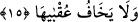

sakındırıp korkutmak içindir.
“Fesevvâhâ” Yani Allah bu kuşatmayı ve helâki onların arasında eşit kıldı. Küçük
büyük hiçbiri bu azaptan kurtulamadılar, demektir. Ya da Semûd’u yerle bir etti,
demektir.
Rivâyet olunduğuna göre Semûd kavmi başlarına gelecek olan azabın alâmetlerini
gördüklerinde Salih (a.s.)’ı öldürmek üzere peşine düştüler. Ancak Allah onu kurtardı.
Nitekim Allah Hûd sûresinde şöyle buyuruyor: “Emrimiz gelince, Sâlih’i ve onunla
beraber îman edenleri, bizden bir rahmet olarak (azaptan) ve o günün zilletinden
kurtardık.” (Hûd, 11/66).
15. (Allah, bu şekilde azap etmenin) âkıbetinden korkacak değil ya!
Âyetin başındaki “vav” harfi başlangıç içindir veya önceki âyetteki “hepsini helâk
etti” ifâdesinin kendisine râci olduğu Allah Teâlâ’dan haldir. Allah bu azabı onların
başına vermenin âkıbetinden korkmaksızın onları yerle bir etti. Ya da hükümdarların ve
idarecilerin kendi başlarından korkup da bir miktar merhamet ettikleri gibi Allah Semûd
kavmini helâk etmenin âkıbetinden korkmaksızın onları yerle bir etti. Çünkü Allah Teâlâ
ancak hak olan ne ise onu yapar. Başkaları için korkulacak bir durum da olsa O fiilinin
âkıbetinden korkmaz, yaptığının sonunu önemsemez.
Bazı âlimler şöyle demiştir: Salih (a.s.) onlara haber verdiği halde ne Kudâr ne de
onunla işbirliği yapan diğerleri Allah’ın devesini kesmenin getireceği cezâdan
korkmazlar. Bunun sonucu olarak başlarına gelecek türlü belâ, musîbet ve cezâlardan
korkmazlar.[117]
[116]. İbn Kesir, IV, 517.
[117]. Şems sûresi Rebîulâhir ayının başlarında (1705 Temmuz sonu) tamam oldu.